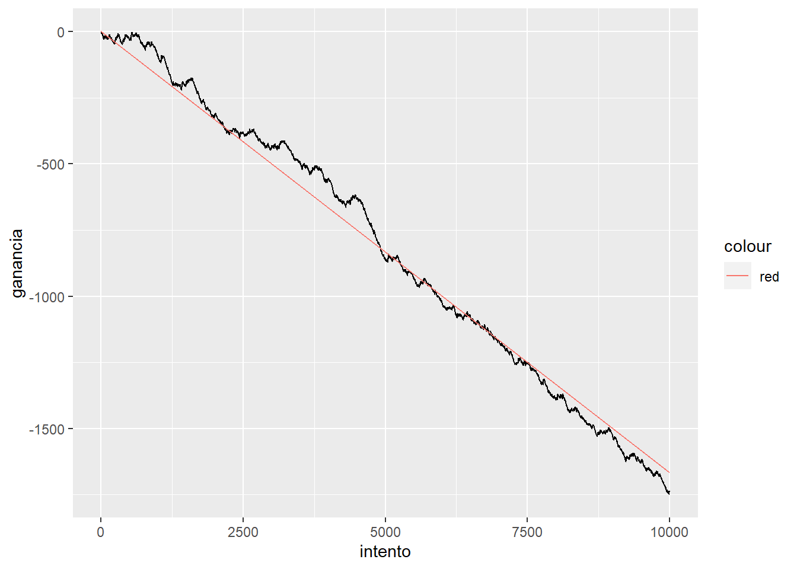
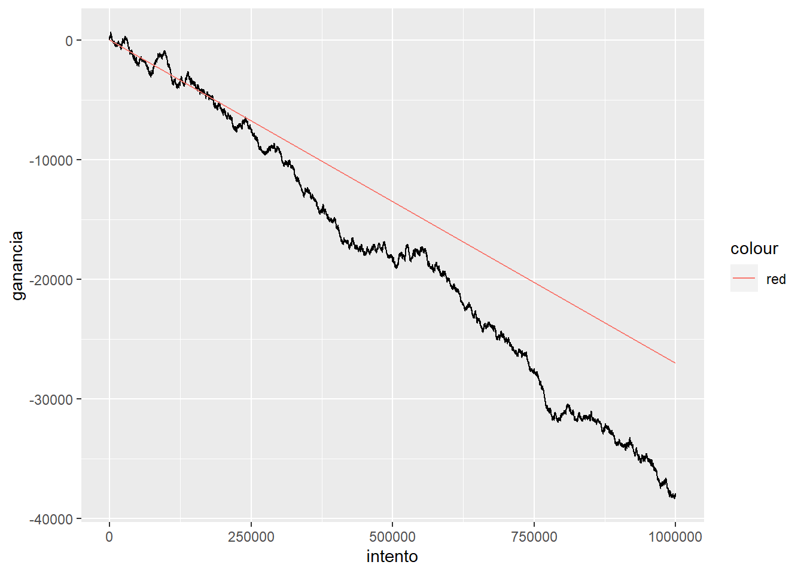
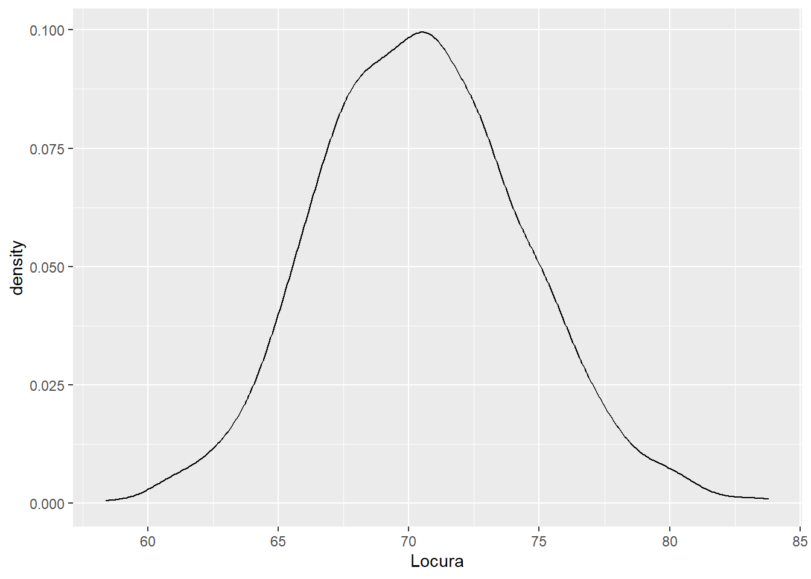
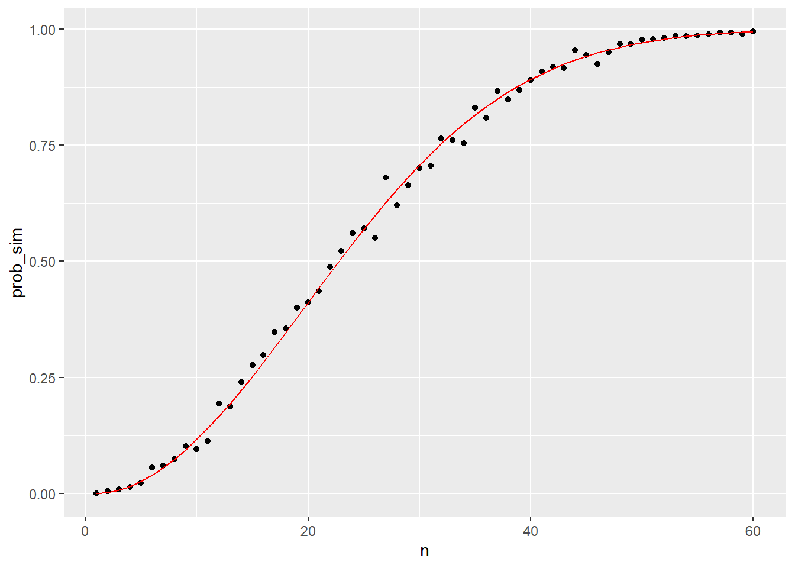

SAA Práctica 1: Variable Aleatoria, Probabilidad y teorema central del límite
Requisitos previos:
- Teoría Temas 1.1 y 1.2
- Haber realizado la práctica 0.
1. Experimento aleatorio. Juegos con 2 dados de 6 caras
1.1 Define el espacio muestral cuando realizamos tiradas con dos dados donde obtenemos como resultado de cada experimento aleatorio la suma de los números de cada dado.
1.2 Calcula las probabilidades de cada uno de los elementos del conjunto espacio muestral
1.3 Representa gráficamente, mediante un diagrama de columnas las probabilidades anteriores (eje y), donde aparezcan los resultados del espacio muestral en el eje x
1.4 ¿Los ensayos son dependientes o independientes?
1.5 Calcula la probabilidad de obtener tres veces consecutivas un 7 en las tres primeras tiradas.
2. Simulación experimento aleatorio con recompensa: dado y ruleta
2.1 Realiza el siguiente experimento utilizando código R y las librerías dplyr (sample_n y operador %>%) y ggplot2: Simula el lanzamiento de un dado. Cada vez que salga un 2, recibes 5 € (el tuyo y 4 de ganancia neta), cada vez que no aciertes, pierdes 1. Calcula la esperanza matemática teórica y mediante un experimento con 10000 simulaciones y una semilla = “777”.
Representa gráficamente en una línea, tu ganancia acumulada (eje y) sobre el número de simulaciones (eje x) y agrega una línea a la gráfica con la esperanza matemática, para medir el grado de suerte. Aplica ahora la semilla 999. ¿Con qué semilla ha habido más suerte?
2.2 Realiza el experimento, apostando al 7 en la ruleta, 1.000.000 veces, con 35 € de ganancia neta cada vez que aciertes y un euro de pérdidas cada vez que falles. Calcula la esperanza matemática teórica y la esperanza matemática según el experimento. Representa visualmente la línea de la esperanza matemática (si en cada tirada ganas Ex). Utiliza como semillas 1 y 123. En base a los resultados obtenidos ¿Qué opinas sobre la varianza y la esperanza matemática de este juego?

3. El teorema central del límite: lqsa
Utilizando el dataset “lqsa”, simula 1000 veces la extracción de muestras aleatorias de tamaño n = 15 de las 30 cartas. Calcula la media muestral para cada extracción y construye una matriz o data frame con las 5 variables numéricas de la baraja como columnas y en cada fila la media muestral del valor de cada extracción.
Calcula la media y la desviación típica de las mil filas para cada variable.
Representa gráficamente la distribución de los datos para cada variable.Utiliza geom_density() en lugar de barras. Ejemplo del experimento con la variable “locura”.

Investiga por tu cuenta el tamaño de la muestra necesario para que se cumpla el teorema.
4. El problema del cumpleaños
Prueba el código del problema del cumpleaños variando los parámetros. Investiga, busca ejemplos y practica el funcionamiento de las funciones sapply, replicate y any
mismo_dia_cumple <- function(n) {
dias <- sample(1:365, n, replace = TRUE)
any(duplicated(dias))
}calcular_prob_sim <- function(n, B=10000) {
resultados <- replicate(B, mismo_dia_cumple(n))
mean(resultados)
}calcular_prob_exac <- function(n){
prob_unique <- seq(365,365-n+1)/365
1 - prod(prob_unique)
}n <- seq(1,60)
prob_sim <- sapply(n, calcular_prob_sim, B=500)
prob_exac <- sapply(n, calcular_prob_exac)
ggplot(data.frame(n, prob_sim, prob_exac), aes(n, prob_sim))+
geom_point()+
geom_line(aes(n, prob_exac), color="red")